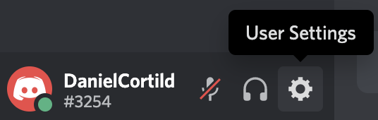
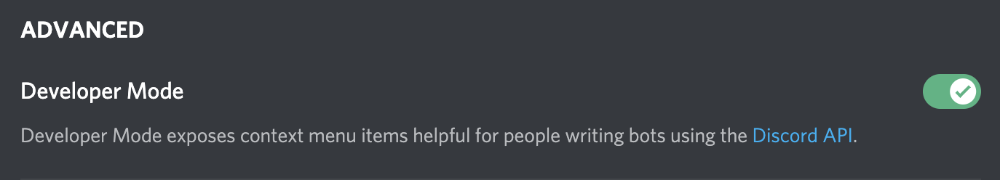

Discord
Connaîs-tu Discord? Et les bots Discord? On peut les programmer en JavaScript grâce à la librarie DiscordJS!
Commencer !Connaîs-tu Discord? Et les bots Discord? On peut les programmer en JavaScript grâce à la librarie DiscordJS!
Commencer !Avant d'entamer ce défi, assure toi d'avoir déjà fait ceux ci:
Ensuite, assure-toi que tu sois bien connecté à ton compte Repl.it, et que tu aies ton projet de la fois passée.
Si tu utilises Discord de temps à autre, tu as sûrement remarqué que pour interagir avec un bot tu ajoutes un ! devant ton message. Ce point d'exclamation sert à indiquer au bot qu'il s'agit d'un message pour lui et non d'un message "normal".
La fois passée on avait créé un code qui répondait Pong quand on écrivait le message Ping. Une commande plus adaptée pour le bot serait !ping :
if (msg.content === "!ping") {
msg.reply("Pong");
}
On peut créer plusieurs commandes comme celle-ci en ajoutant plusieurs if l'un à la suite de l'autre:
if (msg.content === "!ping") {
msg.reply("Pong");
}
if (msg.content === "!yin") {
msg.reply("Yang");
}
Essaie d'implémenter jusqu'à 5 commandes (jeux de mots, rimes, ce que tu veux en fait...) et montre-les à ton animateur.
Tu remarqueras sans doute que tous les msg.content === "....", c'est assez long à écrire! Et puis c'est redondant. Il y a une façon alternative que j'aimerais que tu essaies: le bloc switch
Voici quelques commandes avec la syntaxe if:
if (msg.content === "!ping") {
msg.reply("Pong");
}
if (msg.content === "!yin") {
msg.reply("Yang");
}
if (msg.content === "!hey") {
msg.reply("Hello");
}
Alors qu'avec la syntaxe switch, on a plutôt ceci:
switch(msg.content) {
case("!ping"):
msg.reply("Pong");
break;
case("!yin"):
msg.reply("Yang");
break;
case("!hey"):
msg.reply("Hello");
break;
}
La syntaxe switch est utilisée quand tu as beaucoup de if qui comparent tous une même valeur à un ensemble de valeurs. Ici, msg.content est comparé à une valeur dans chaque if, donc un peut utiliser un switch.
On va créer une nouvelle commande !dire un peu spéciale.
Si on écrit le message!dire Bonjour dans Discord, en bon perroquet, notre bot devra répondre... "Bonjour".
Si on écrit le message!dire Cacahouète, notre bot perroquet répondra "Cacahouète".
Simple, non? En passant, on doit garder nos commandes précédentes!
On doit trouver une manière de séparer la commande en plusieurs mots: le premier mot avec un "!" devant et le reste.
La bonne nouvelle, c'est qu'en JavaScript, il y a une fonction qui fait cela. C'est la fonction split() :
"Bonjour je suis Daniel".split(" "); // => ["Bonjour", "je", "suis", "Daniel"]
La fonction split() est exécutée sur une chaîne de caractères (du texte), et sépare ce texte à chaque fois qu'il voit l'argument donné. Dans l'example d'avant, l'argument était un espace, donc il sépare le texte après chaque espace...
Si on avait donné la lettre "i" comme argument, voici ce qu'on aurait:
"Bonsoir je suis Daniel".split("i"); // => ["Bonso", "r je su" "s Dan", "el"]
À ton avis, comment pourrait-on se servir de la fonction split() pour notre bot?
Tu pourrais séparer le message reçu par le bot en fonction des espaces. Par ailleurs, pour que l'ordinateur se souvienne du message séparé, il faut le stocker dans une variable.
const msgSep = msg.content.split(" ");
Une fois ton message séparé en plusieurs mots, tu dois vérifier si le premier mot du message équivaut à la commande "!ping" ou "!yin", etc.
Pour accéder au premier mot de ta liste, tu peux utiliser l'index. En JavaScript, les listes commencent toujours à l'index...
const premierMot = msgSep[???];
const premierMot = msgSep[0];
Dans ta syntaxe switch, tu peux maintenant remplacer msg.content par premierMot. On a donc quelque chose du style:
const msgSep = msg.content.split(" ");
const premierMot = msgSep[0];
switch(premierMot) {
case("!ping"):
msg.reply("Pong");
break;
// ...
}
Jusque là, on a simplement rallongé notre code... Mais on peut maintenant utiliser le deuxième mot du message avec notre commande "!dire". Si le message est !dire Bonjour, le bot répond "Bonjour". Si le message est !dire Yooo, le bot répond Yooo...
Essaie de le faire! Souviens toi qu'en JavaScript, le 2e mot est en fait le mot à l'index 1. Si tu as besoin d'aide, demande à un animateur.
Il y a un petit un problème avec ceci. Imaginons que l'on veuille que le bot perroquet dise "Salut David". On va lancer la commande "!dire Salut David". Mais pour l'instant notre bot répond simplement le 2ème mot de la commande, c'est-à-dire "Salut". En fait il doit répondre tous les mots qui viennent après.
Pour ce faire on va utiliser une boucle.
const mots = [];
for(let i=..., i<..., i++) {
mots.push(msgSep[i]);
}
msg.reply(mots.join(' '));
Dans ce code, tu dois remplacer les '...' par les valeurs appropriées. Le premier '...' représente le mot auquel on commence (le 2ème, soit index 1 en JavaScript). Le deuxième '...' représente le nombre de mots (Utilise le .length ;-) )
On va maintenant explorer la fonction random(). En anglais, "random" veut dire "aléatoire". Imaginons on veut ajouter une commande "!random" qui répond un mot aléatoire d'une liste. Pour commencer, on va juste répondre un nombre aléatoire.
Ajoute un nouveau case pour "!random" qui répond Math.random(). Ceci va répondre un nombre aléatoire entre 0 et 1
Math.random(); // => 0.6839520323555972
Mais on ne veut pas un nombre à virgule aléatoire entre 0 et 1. On veut un élément aléatoire d'une liste. On veut un indice aléatoire entre 0 et le nombre d'éléments de la liste. Pour avoir un nombre entier entre 0 et N, on prend d'abord un nombre aléatoire à virgules entre 0 et N et ensuite on prend la partie entière.
Math.random() * 10; // => 7.464961919625317
Math.floor( Math.random() * 10 ); // => 7
Pour prendre la partie entière, on utilise la fonction Math.floor().
Si on veut un élément aléatoire d'une liste, on doit d'abord avoir une liste. Définis une liste avec quelques mots.
const liste = ["Bonjour", "Au revoir", "Hello", "Hey", "Salut", "À plus"];
J'ai ici une liste de 6 éléments. J'ai donc besoin d'un nombre aléatoire entre 0 et 5 (parce qu'on commence à 0). Pour avoir un nombre entier aléatoire entre 0 et 5, on fait:
Math.floor( Math.random() * 6 );
On veut donc répondre un mot aléatoire de la liste. Rappelle toi que pour prendre un élément de la liste, on dit liste[...], où ... représente l'indice qu'on veut. Ici, cela doit être un nombre aléatoire:
liste[ Math.floor( Math.random() * 6 ) ];
Imaginons on veut changer la liste par après. Par example, si on veut rajouter des éléments. On doit alors changer le 6 dans la commande. On pourrait simplement coder le 6 à être la longueur de la liste.
Pour avoir la longueur de la liste en JavaScript, on utilise .length. Donc pour avoir la longueur de la liste, on peut utiliser:
liste.length; // => 6
Change le 6 en liste.length et change un peu la liste. Normalement tout devrait encore marcher!
Imaginons que certains commandes doivent uniquement marcher dans le canal "test-bot". Et d'autres uniquement dans le canal "general". Ou un autre canal.
On peut répondre uniquement si on est dans le bon canal. Tu sais peut être que plusieurs canaux peuvent avoir le même nom sur Discord, donc on ne peut pas utiliser le nom pour savoir dans quel canal on est.
En fait chaque canal a une ID unique. Cet ID ressemble à "791424989370515457", et on ne peut donc pas simplement le deviner. Il nous faut donc le trouver dans Discord.
Dans Discord, vas dans les réglages d'utilisateurs:
Ici va dans "Appearance". Tout en bas, tu trouveras "Developer Mode". Active cette option.
Maintenant on peut voir l'ID de chaque canal. Va sur le canal et fais un clique droit. En bas il y aura l'option "Copy Channel ID". Ceci copie l'ID du canal!
Tu verra donc que l'ID du canal "test-bot" est "791424989370515457".
On peut vérifier si le canal dans lequel a été envoyé le message est le canal "test-bot", on fait la condition suivante:
if ( msg.channel.id === "791424989370515457" ) {
// ...
}
Essaie donc de limiter certaines commandes au canal "test-bot", ou à un autre canal!
CHALLENGE: Tu peux aussi faire en sorte que ton bot réponde différentes choses en fonction du canal. Par example, dans un premier canal le bot répond "Bonjour", et dans un autre il répond "Au Revoir".
Il est maintenant temps de vérifier que tu as réussi toutes les tâches d'aujourd'hui! Les noms des commandes sont pas importantes, ce sont leurs fonctionalités qui sont importantes.
!standart qui répond une réponse prédefinieSi ton bot sait faire toutes ces étapes, il est fonctionel pour passer à la fiche suivante!